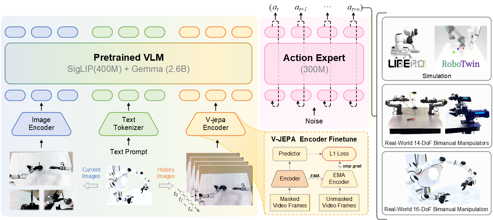
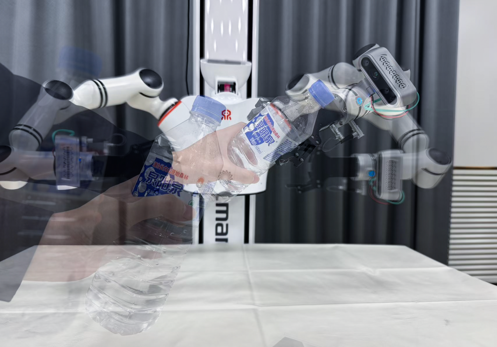
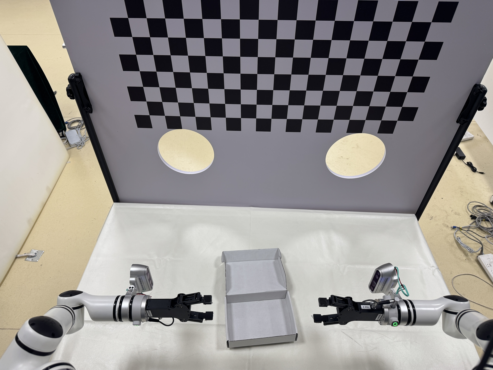
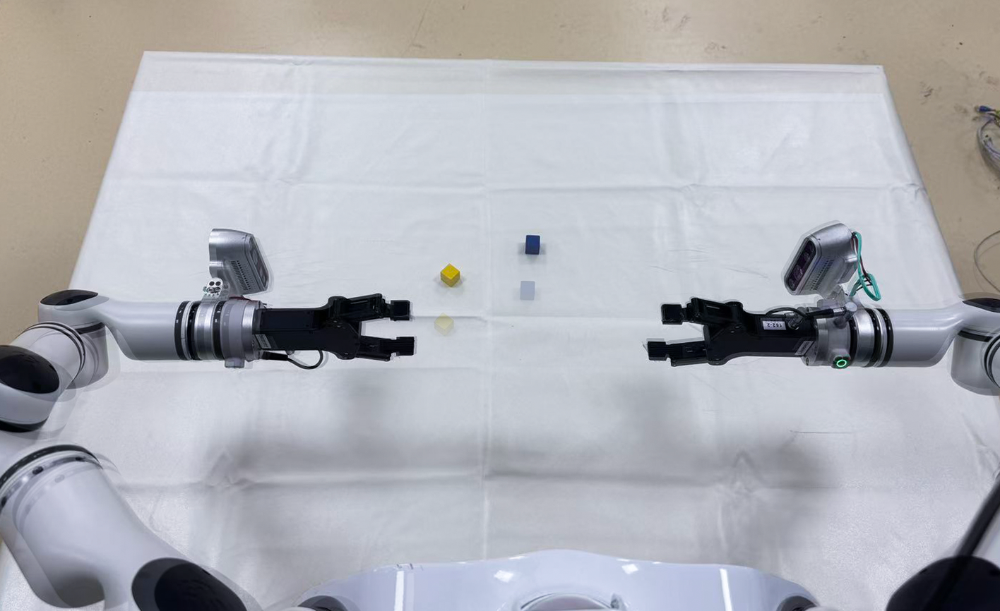
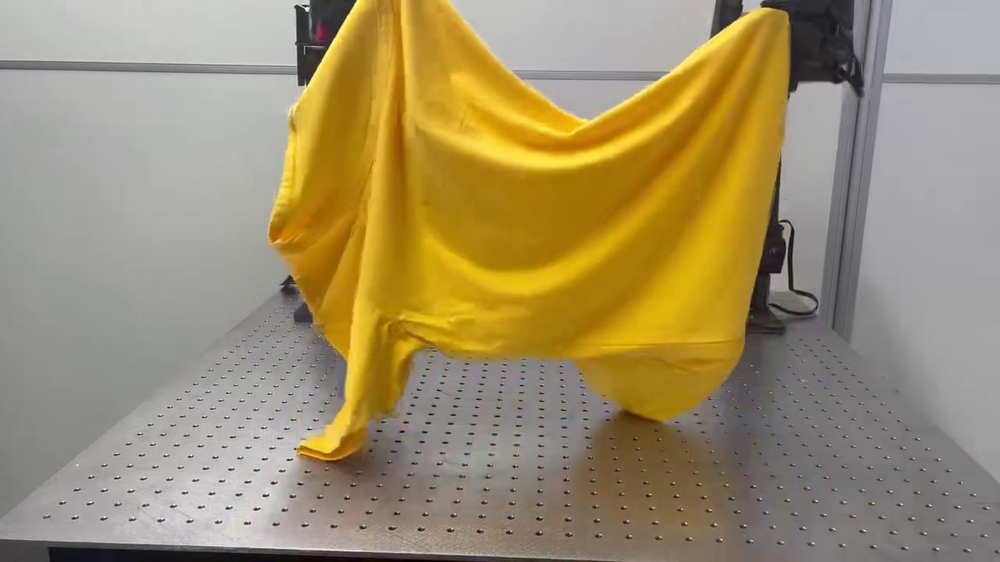
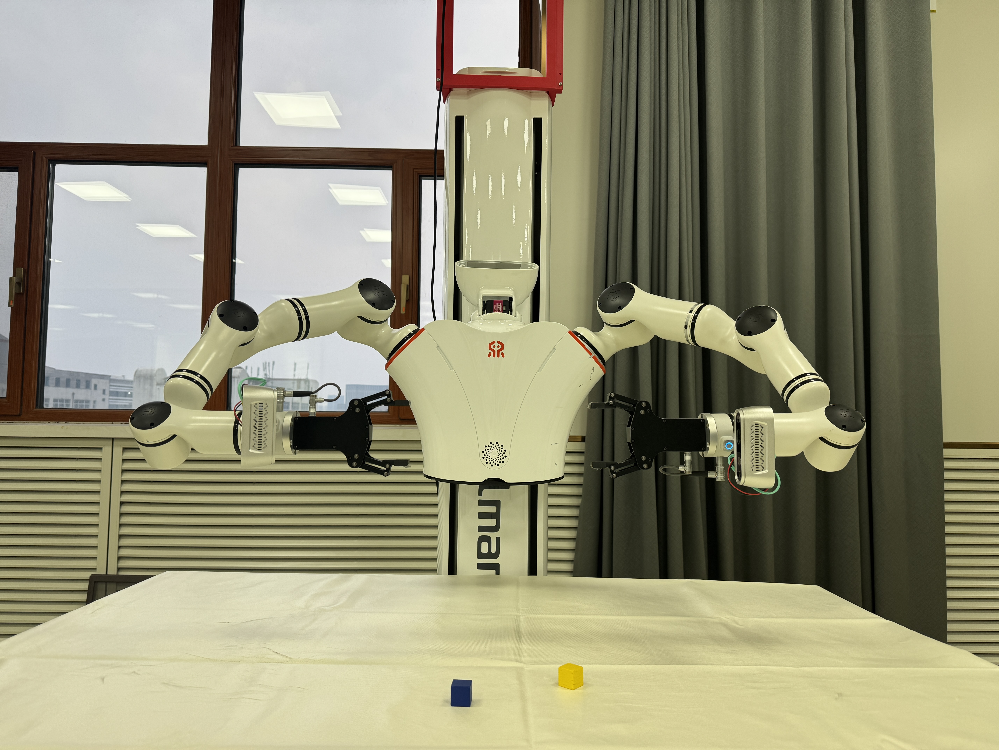
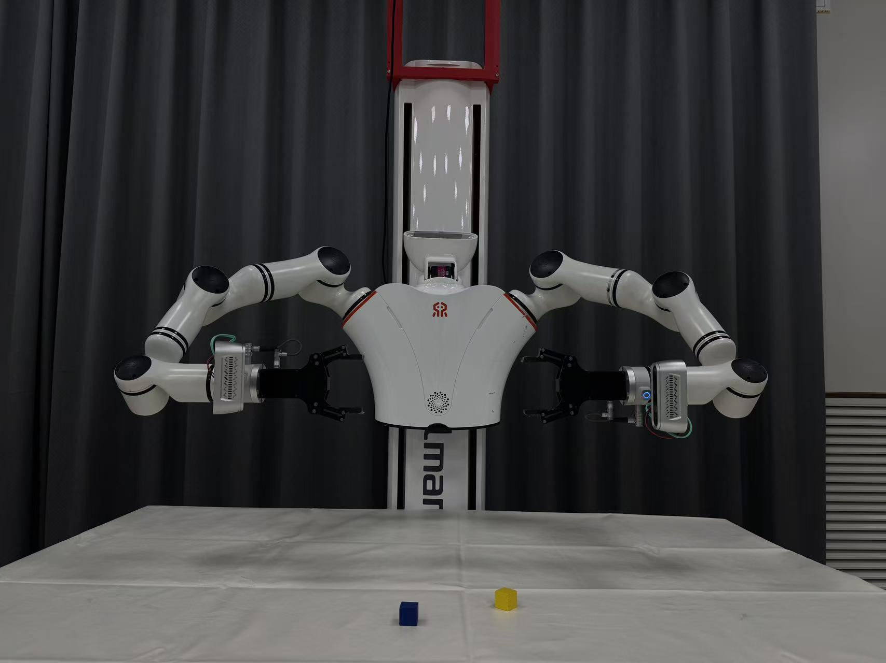

Video Presentation
Abstract
While Vision-Language-Action (VLA) models exhibit remarkable open-vocabulary generalization in robotic manipulation, they remain fundamentally constrained by a structurally reactive paradigm.
Inferring actions from static visual representations or simple frame stacking forces policies to learn temporal dynamics from scratch, lacking the physical grounding necessary for robust real-world control. We introduce BeliefVLA, a framework that shifts robotic control from purely reactive mapping to reasoning within a continuous implicit belief state.
By leveraging a Video Joint-Embedding Predictive Architecture (V-JEPA2) to infer these latent states from historical context, BeliefVLA injects dynamics-aware priors directly into the policy. This approach seamlessly integrates physical reasoning and spatiotemporal dynamics without sacrificing the high-level semantic capabilities of foundational VLMs.
Extensive experiments establish BeliefVLA's state-of-the-art performance across simulated and real-world benchmarks. Furthermore, five observation-perturbation tasks explicitly validate its capacity for temporal memory, action-centric features, and physical priors.
Architecture

Overview of the BeliefVLA framework, which integrates an implicit belief state into the vision-language-action pipeline.
Dynamic Belief State
A fine-tuned V-JEPA2 encoder extracts physical dynamics and temporal evolution from historical observations, acting as an implicit belief prior.
Multimodal Fusion
Semantic tokens (PaliGemma), static visual tokens (SigLIP), and belief tokens are unified via deep self-attention layers.
Action Generation
A Flow Matching-based continuous action expert refines random noise into precise multi-step action sequences grounded in physical context.
Experiments
Robustness to Observation Perturbations
BeliefVLA was explicitly validated in the real world against severe observation perturbations, including:
- Dynamic Adaptation: Handling objects in motion.
- Background Variation: Adapting to out-of-distribution textures.
- Spatial Perturbation: Shifting robot base positions.
- Illumination Variation: Extreme lighting changes.
- FoV Occluded: Temporary camera obstruction.





